场面攻略解说
<库特的家>～<咪咪卡农场>
- 打开电脑
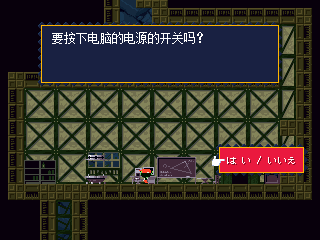
- 在菜单中选择「地下室」
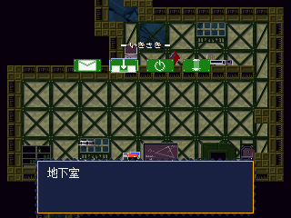
- 打开地下室入口
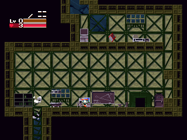
- 去地下室之后
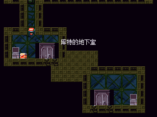
- 打开宝箱然后得到手枪
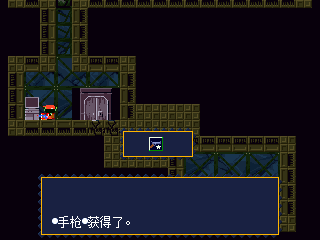
- 调查一下终端然后把电扇打开
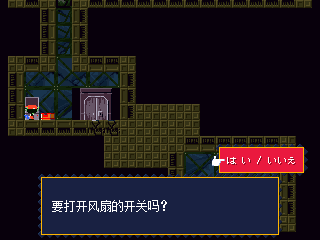
- 上去
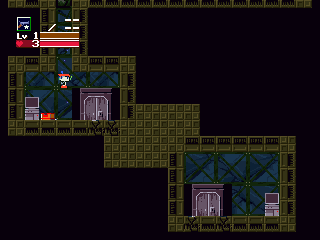
- 从楼上出去
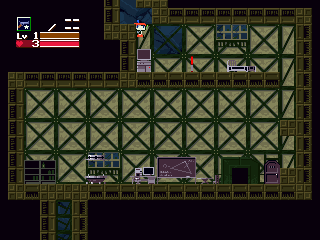
- 通过上侧的通道
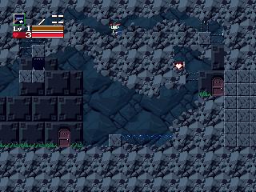
- 然后到库利库的家里
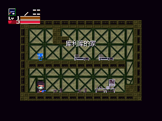
- 要像这样才能到库利库的家
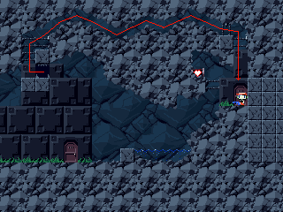
- 和库利库对话
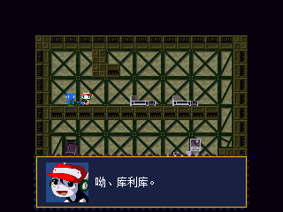
- 然后选择「是」
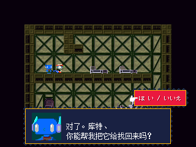
- 然后到外面去
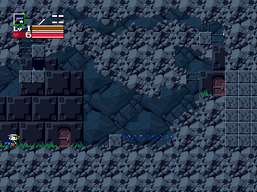
- 向左走、去静之洞窟
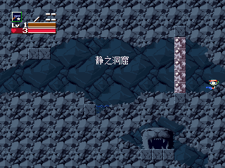
- 过去之后马上就去下面的控制室
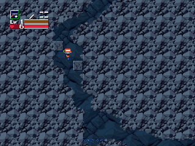
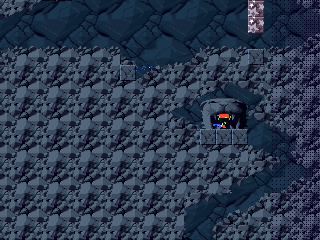
- 调查终端按下按钮、然后出去。
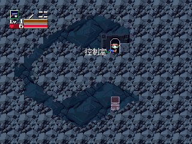
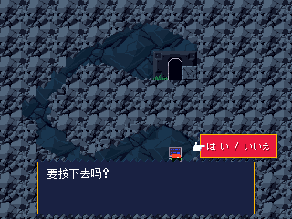
- 进入左上方的小房间
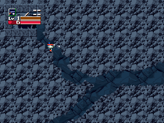
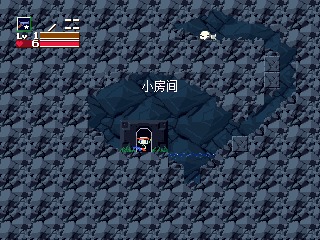
- 然后调查帕比（狗）后
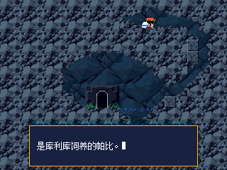
- 把狗带走
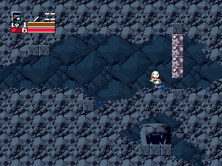
- 返回库利库的家后
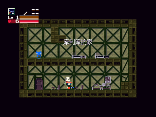
- 然后把狗交给库利库
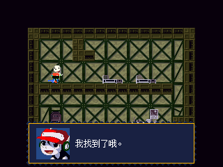
- 然后选择「是」
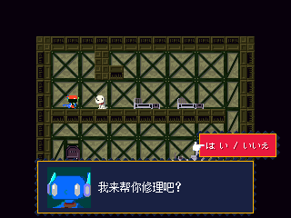
- 在库特的家后
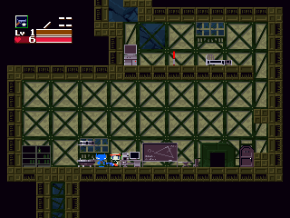
- 把传送装置的电源打开
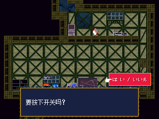
- 调查电脑、然后选择「邮件」、读邮件
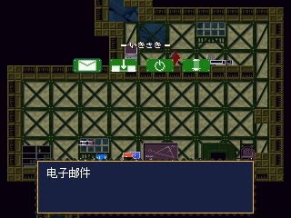
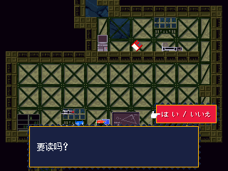
- 和库利库对完话后
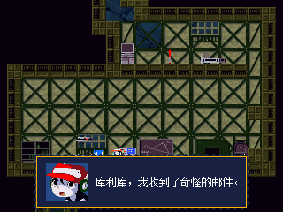
- 之后、再去一次库利库的家里和库利库对话
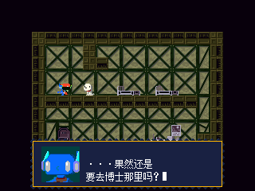
- 就可以得到地图系统
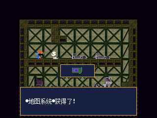
- 最后返回库特的家、调查电脑并选择「传送装置」
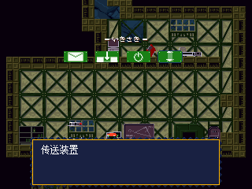
- 将传送目的地发送给传送装置。
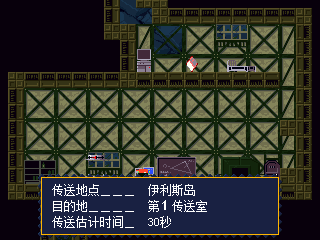
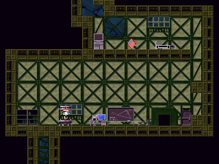
- 调查传送装置后进行隐形传态、到达第１传送室
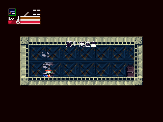
- 出去后、经过咪咪卡农场
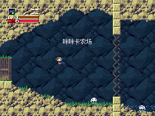
- 到达咪咪卡村落
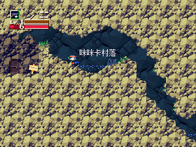
<咪咪卡村落>～<图库鲁的家>
- 到左下角进入数和多隆子的家里
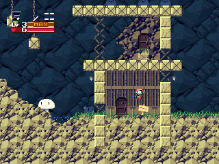
- 和多隆子对话
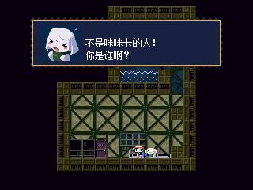
- 然后选择「是」
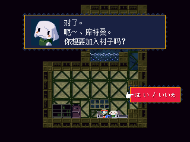
- 拿到马间钥匙后
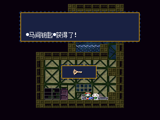
- 就出门右转到马宾和间八的家里
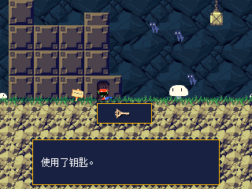
- 然后和间八对话、听暗号
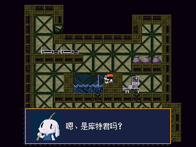
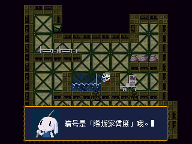
- 这个屋子里有隐藏通道。详细情况参照地图系统
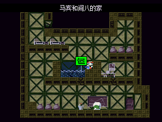
- 然后外出、沿着多隆子家的屋顶上去
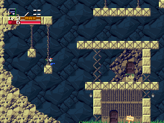
- 到左上方的杰克的家里
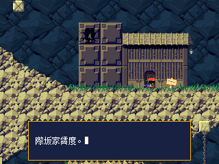
- 和杰克对话
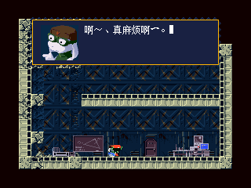
- 让他打开风扇的电源
- 然后出去、去右上方的金的家里
- 和金对完话后
- 外出往上走到上面的大广场和巴鲁罗格对战
- 一个有两种形态
第二形态、会连续掉下4个蓝色小怪。
攻击时、会一边吐气泡一边传送掉下来的小怪们。无视它们比较好。
- 击败巴鲁罗格后
- 和数对话然后去金的家里
- 和数、金对话
- 然后出去
- 之后去数和多隆子的家里
- 和数见面之后、再去金的家里
- 金→数→金→数→金 按照这个顺序对话后
- 与右边的墙接触，会出现一扇去第２��送室的门
- 用传送装置传送到图库鲁的家里
- 从宝箱里可以得到导弹炮
- 隐藏通道参照地图系统
- 然后出门到大仓库。从左上角的口子进入垃圾处理厂
<垃圾处理厂>～<冷藏库>
- 对即使攻击也不会死的高迪，可以对话
- 和第一个高弟对话、回答「是」然后往里面走
- 和第二个高弟对话、回答「是」然后往里面走
- 调查第三个高弟附近的终端，打开出口
- 回到左边、从出口出去、到暗い草原
- 去ジェンカの家(在第三块平台上)，和她对话
- 出去，到左边的卡莉的家和卡莉一战。卡莉的子弹会爬坡，要注意一下。
- 胜利后，去卡莉的房间。和卡莉说话，回答「是」后得到口红。
- 把口红送到珍卡家里去后
- 会和巴鲁罗格发生一战、卡莉也会协助战斗
- 因为巴鲁罗格上不了2楼、所以待在2楼就可以轻松击败
- 击败后，和卡莉对话、回答「是」
- 再次对话后、然后在床上睡一晚
- 第二天，和珍卡对话
- 进入暖炉
- 到达小洞窟
- 向右走到冷�i库
- 攻击冻住的门
- 然后进入桑塔的家
- 暖炉的火焰是个保存点
- 和桑塔对话
- 出去之后，去左下方见mi・panyon
- 从掉下来的宝箱中得到桑塔的钥匙
- 然后把它交给桑塔
- 之后、再和桑塔对话就能得到火焰喷射器
在未拿到地图系统的情况下、在这里也可以得到。
- 出去，通过上面的楼梯、往右走
- 进入门后到达高速公路遗迹
<高速公路遗迹>～<要塞遗迹的里面>
- 一路往右走
- 右端隐藏的风扇，一接触就接通电源
- 进入门后到达驿站街
- 进入怡可旅馆
- 和怡可对话
- 然后到上面的大浴场去
- 洗完澡后、马上上去。此后，再进入温泉的话受到损伤、要注意！
- 到下面和怡可对话
- 调查桌子的左边
- 饭后，在左边的床上住一晚
- 第二天，和怡可对话后出去
- 进入右边的大门到达小高丘
- 这里可以用手枪向卡莉交换左轮
但交换的话、脉冲发生器和光束加农就得不到了。
- 调查导弹炮宝箱旁边的终端、打开风扇的电源
- 持有左轮的时候会出错
必须将武器升级到等级3后强行上去
- 在第一个风扇右下通道尽头的宝箱里，
可以得到涡轮充能器
- 没有持有左轮的情况下是打不开的
- 登到右边后，进入门到丘陵小屋里
- 紧接着是和巴鲁罗格对战
- 注意防御死亡陷阱，好好地排除敌人的攻击就能轻松取胜。推荐火焰喷射器。
- 击败后，从外边进入洞穴
- 进入掉落中的横洞进入要塞遗迹
- 有很多的死亡陷阱。遇到困得时、可以碰一下附近的力场、在无敌时间里通过
- 到左上方区域和Boss・青蛙一战
- 一开始、坐右边的电梯上去。接近天花板的时候向左跳。回头攻击巴鲁罗格。
- 左边的电梯下来后就乘上去。然后一直重复。
- 击败后，向左走回到小高丘。继续向左前进，被珍卡失控的魔法传送到了要塞遗迹的里面
- 和卡莉对话后、进入机械要塞
<机械要塞>～<隧道前>
- 因为设置的炮台和地刺很多，所以要谨慎地前进
- 途中遇到伊格尔
- 解除力场后、进入到里面
- 然后掉入陷阱
- 紧接着是青蜘蛛一战。有第二种形态、只要注意移动的石块，就能轻松取胜。
- 进入门后达到竖窟
- 然后又被米莎莉立刻传送到通路
- 向右前进
- 如果破坏到上方保存点的图案的话、就会掉落保存点。附近有隐藏的心。
- 从移动的石块下方到达迷宫
- 调查终端、打开通道并不断前进
- 到达出口时、巴鲁罗格登场
- 把下方的骷髅全部消灭后，再次前往出口
- 来到通路
- 在路的尽头、在mi・panion协助下
- 逃到了广场
- 去右边进入拉比尔的家
- 也一边打倒袭击来的拉比尔
- 然后去左上角拿到地下监狱钥匙
- 出去后
- 来到下方的地下监狱和伊格尔一战
- 有第二形态
- 削完1条体力后，调查出口的话、会再次和伊格尔一战
- 注意刺的话就能轻松取胜
- 击败后、和金对话得到通信器
- 出去后、前往左边的第３传送室
- 用传送装置传送到机械要塞病院
- 和布斯特对话两次、回答「是」后、和数码对话并睡觉、第二天再和布斯特对话得到硬币
��送装置で第４��送室へ。外に出て
商店街へ。ここで何かを��入する。
自�迂����Cでオレンジジュ�`スを�Iってブ�`スタ�`に届けると、
レシプロエンジンを入手可能。
他の商品については、武器・アイテム入手方法を参照。
コインが�oくなったら、本屋の下を通って
�Lし宝��の前に来る。直後にドロ�`ル�椤５冢残��Bあり。
�钠漆帷⒆��訾虻扦盲��Lし宝��へ。ここで３回まで
コインを入手可能。
３回目の入手でシスタ�`ズ�椤Ｑ驻蛑行膜讼�していけば安全。
�钠漆帷�商店街のシ�`ルドが解除されるので、右へ�Mむ。落石に注意。
突き当たりのドアに入ってトンネル前へ。右へ�Mんで
トンネル(１)へ。
<隧道(１)>～<对岸>
右へ�Mんでトンネル(２)へ。
右へ�Mんでトンネル(３)へ。
シ�`ルドを解除する�C械のすぐ上にある穴に入ってトンネル(４)へ。
ハンドガンとフレイムランチャ�`を所持している�龊稀�
�C械を操作する前にチャバに��しかけると、パルサ�`と
ア�`ムズバリアを入手可能。ちなみに、
�C械を先に操作してしまうと、ア�`ムズバリアしか入手できない。
�C械を操作して通路を�_き、宝箱から万能カギを入手。
パルサ�`を所持している�龊膝ē椹`が起きるので、パルサ�`の
レベルを３にした後、
上にいるガウディを横から倒して通路を�_く。
トンネル(３)に��って、すぐ下にある�C械に
万能カギを差し�zんでシ�`ルドを解除する。
右へ�Mんで、暴走ブルド�`ザ�`�椤Ｏ陇寺浃沥饯Δ��rは、トゲに当たれば反�婴巧悉松悉�る。
�钠漆帷⒂摇⑾陇丐冗Mむ。出口をプレスが塞いでいるので、とりあえず左へ。
突き当たりの休憩所に入って、ベッドで寝る。再び
トンネル(３)に��ってプレスを破�病�港へ。
船の左にある�{屋に入って伊藤に２回��しかけ、「はい」と答える。
ベッドで一泊する。翌日、再び伊藤に��しかけてボンベを入手。
外に出て右へ�Mみ、地面の下を通って�_合いへ。
右へ�Mんで��岸の地へ。
�C械を�{べて、万能カギが使えないことを�_�Jする。
一旦港へ��って、地面の上�趣蛲à盲��_合いへ。
途中でチエに会う。右へ�Mんで��岸の地へ。
ドアに入って小部屋へ。
プレスに��されてぺっちゃんこになった万能カギを拾って外に出る。
再び港へ��って、地面の下�趣蛲à盲�
��岸の地まで来る。
�C械を操作して出口を�_き、また
港へ��って、地面の上�趣蛲à盲�
��岸の地まで来る。
右へ�Mんでジャングルへ。
<丛林>～<深海底>
草に�Lれたプレスに注意。コウモリは��えると面倒なので早めに倒す(特に中�Pの崖)。
崖を登り切った所にあるプレスは、足�訾摔筏胜い冗Mめないので倒さないように。
ウォ�`タ�`スライダ�`は、滑り降りた�rに�Fれるドアで、一�荬���ることができる。暇つぶしができる。
右上のドアに入って��屋へ。直後にブ�`・ブタック�椤�
カ�`リ�`は�Wれて参�椤Ｌい���しに注意すれば�S�佟�
�钠漆帷�ベッドで一泊する。翌日、右のドアに入って火山へ。
クリッタ�`を�_�gに倒しつつ、慎重に�Mめば安全。
山��のドアに入って火口湖へ。
同�rに古ロ�`プを入手。カ�`リ�`を�恳�して行く。�Tれれば�yしくは�oいハズ。
右のドアから外に出て、火山を下てドクタ�`の本��地へ。右へ�Mんで上に上がる。
ドクタ�`に�k��後、指定�r�g内にコウモリを全�绀丹护搿Ｊ��・工毪去博`ムオ�`バ�`。
その後、トランシ�`バ�`でキングを呼び、脱出する。
静かな洞窟に��ったらクォ�`トの家へ。
ブ�`スタ�`博士が来る。地下室へ行くと、大きな扉を万能カギで
�_くことができる。
ハンドガンを所持�r、�C械を�{べると
ビ�`ムキャノンに改造可能。
��送装置で第１��送室へ。
ミミガ�`�r�@を�Uてミミガ�`の村へ。以前より�长���加している。
キングの家へ行って、キングに��しかける。逃げたトロ子を探すことになる。
外に出て、右下の方にある空洞に行く。入ると、トロ子＋�椤％去碜婴洗蟪hを�膜盲皮�る。
落雷はデストラップを生成するので注意。
上のブロックに�\っているほうが安全。�钠漆帷�キングの家へ
�Bれて行く。第２��送室に入ってトゥクル�`の家へ。
外の出て、左上の����物�I理��へ。ひたすら右へ�Mむ。分厚いシャッタ�`の前にいる
ガウディに��しかけ、シャッタ�`を�_けてもらう。
右へ�Mんだ突き当たりでダストマシ�`ン�椤�
�婴�ブロックと踏み��しに�荬颏膜堡欷��S�佟�
左へ�Mんで、出口から暗い草原へ。
ジェンカの家に入る。キングに��しかけると、ティタンを
入手可能。暖炉に入って
小さな洞窟、冷�i��へ。
あちこちにトゲがあるので注意。右端のドアから小高い丘へ。
途中でドクタ�`が�Fれる。要塞�Eの�Y地へ�wばされる。
�C械要塞を通って�C械要塞病院へ。
�o残な姿のクリ�`クがいる。��送装置で第４��送室へ。商店街に出て右へ。
トンネル前→トンネル(１)→トンネル(２)→
トンネル(３)→と�Mんで港に出る。海中を通って
�_合いへ。ミザリ�`に深海底に落とされる。
カ�`リ�`に��しかけると、ディメロン�椤？冥��_いているときしか攻�膜�通用しない。ティタンが有�俊�
�钠漆帷⒂窑畏饯摔�る上�N流に�\って上へ。ジャングルに打ち上げられる。
<丛林>～<结尾>
右上へ�Mんで��屋、火山、火口湖と�Mむ。
最下部で赤グモ�椤３h台から攻�膜筏皮�るが、常に�婴�回れば安全。
�钠漆帷⒂��趣虻扦盲�火山へ。右へ�Mんで、�浃铯旯�てたドクタ�`の本��地へ。
右へ�Mんで砂漠へ。
途中でカ�`リ�`が倒るので、プレハブへ行く。外へ出て右へ。ドクタ�`登�觥�
ここでカ�`リ�`と�eれることになる。
右へ�Mんで真の本��地へ。下へ落下、右のドアから砦へ。
直後にトゥクル�`�椤Ｈ~っぱ攻�膜厢幛恧靥婴菠氦松舷陇颂婴菠欷斜埭堡浃工ぁ�
全方位��は下段までは来ないので安全。ドクタ�`に触れるとすべての武器のレベルが１になるので注意！
�钠漆帷⒆笊悉厣悉盲�魔女の部屋へ。右へ�Mんでミザリ�`�椤％撺顶戛`の言う通り、すぐに
移�婴筏胜い燃此坤工毪韦亲⒁猓�
�欷い沃肖摔い��龊悉悉嗓Δ筏瑜Δ猡胜韦恰⑼猡顺訾毪蓼谴�つ。
このエリアにはラビルが２体�Lれていて、落雷と同�rに登�觥５工工去楗ぅ栅�６回�停ê嫌�１２回�停─工搿�
とにかくデストラップに�荬颏膜堡毪长取��钠漆帷⒆笊悉违丧�からドクタ�`の部屋へ。
右へ�Mんでドクタ�`�椤５诙�形�Bあり。平和の石を追いかけていれば���g。体力を削りきると、分身が登�觥�
分身を倒すとライフが全回�汀��钠漆帷⑵胶亭问�を追って上の暗�\の部屋へ。
右へ�Mんで、ドクタ�`が�\り移ったディメロン�椤￥�付の２体を倒してしまえば�S�佟�
�钠漆帷⑵胶亭问�を持って右の石の�gへ。赤いブロックの上を�{べて脱出。
エンディングへ。
お疲れ��でした！